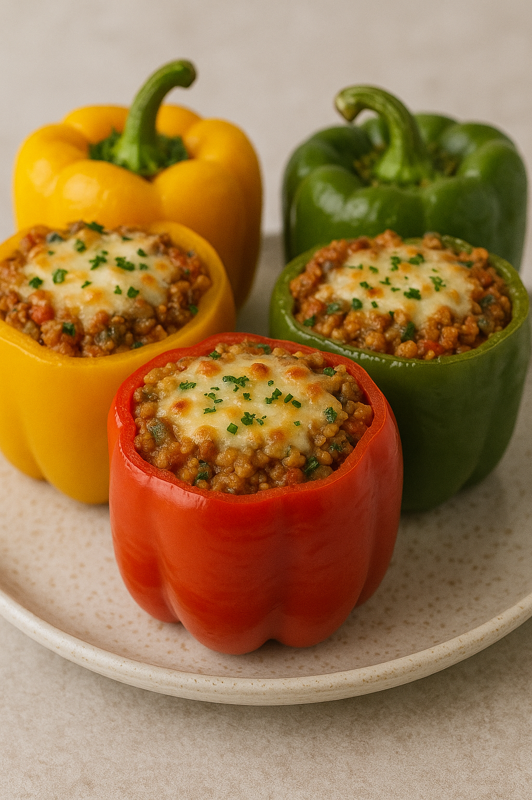

Stuffed Bell Peppers

Baked bell peppers filled with a savory sausage, rice, and tomato mixture.
Yield: 6 stuffed pepper halves |
Prep Time: 20 minutes |
Cook Time: ~55 minutes
Stuffed Bell Peppers Ingredients
Peppers
- 3 bell peppers, halved horizontally, stems removed
- 2 tablespoons cooking oil, divided
- 1¼ teaspoons salt, divided
- ¼ teaspoon black pepper
Filling
- 1 pound Italian sausage
- 1 yellow onion, diced
- 3 garlic cloves, minced
- 1 teaspoon Italian seasoning
- ½ teaspoon garlic powder
- 1 cup marinara sauce
- ½ cup long-grain white rice, uncooked
- ¾ cup chicken broth
- 1 cup shredded mozzarella cheese
Directions
- Preheat oven to 350°F (175°C). Arrange pepper halves in a 9×13-inch dish, brush with 1 tablespoon oil, and season with ¼ teaspoon salt and pepper. Bake 20 minutes, then set aside.
- Heat remaining 1 tablespoon oil in a skillet over medium heat and brown Italian sausage.
- Add onion and garlic; cook until onion is translucent. Stir in Italian seasoning, garlic powder, rice, marinara, remaining salt, and chicken broth.
- Cover, bring to a boil, then reduce heat and simmer 20 minutes. Turn off heat and let sit 5 minutes, then fluff.
- Fill each pepper with the rice mixture and top with mozzarella. Cover loosely with foil and bake 15 minutes, then broil 2–3 minutes to brown the cheese.